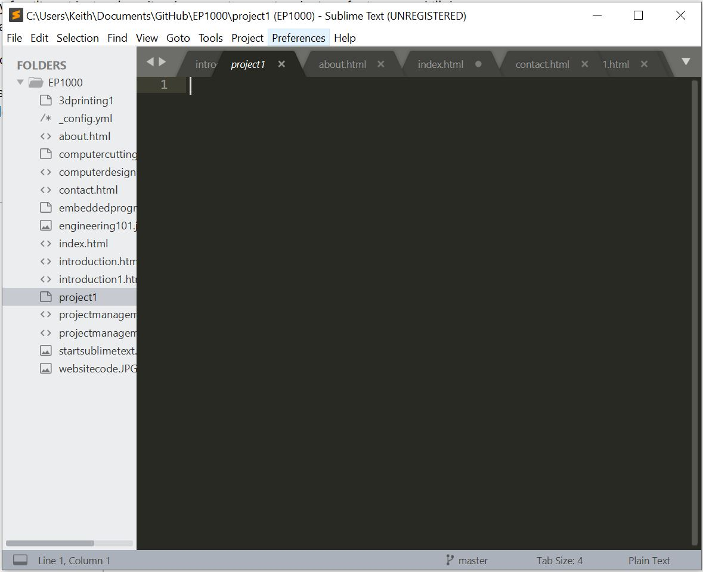

So, if it was hell how did i even end up learning it?
Well, it was a difficult process, but i managed to slowly get the hang of it, if not you wouldnt be reading my website now would you?
First, you need an appropriate code writing software(or text editor), we were given 3 options 1. Atom 2. sublime text 3. visual studios 4. Brackets
I tried 3 of the 4 from above
Atom was abit tedious to set up, and the text was average
I didnt try brackets
I did a C++ coding module a few semesters ago, so im very familiar with visual studios, however just seeing the icon for it sent a chill down my spine, as i was forced to recall my extremely "pleasureable" time learning to code in C++. So visual studio was a no go either
If the devil himself would choose a language to speak, im convinced he would speak entirely in C++, it is absolutely cursed to me
The last option was Sublime text, i was suprised at the ease of setup, just download it and start working. Sublime text also has a deeper variety of colours for the different codes, and it autocompletes the end of my statements.
Its clear which one i picked based on my reviews for each
So after opening Sublime Text, you are greeted with this
W-wait w-w-where is the code?
You have to write it yourself dum**ss!!
After an afternoon on the W3schools page for HTML coding, i roughly got the hang of it
Firstly, to summarise coding structure, HTML is the bricks and the foundation of your website of a house, while CSS is the paint that makes it look pretty
So lets look at how to code shall we?
So there 2 basic forms of code as you can see in the photo
there is P and H
P marks the beginning of a paragraph, it is used to start sentences, and it paragraphs(duh)
H makes the sentence bigger
all commands must be encased in 2 bracket, <> and its reccommended to close each statement with the same version of itself but with a /
When you want to place an image, use img src="name.fileformat" alt="name of image" width"?" height"?" then you close the bracket.
Thats all i learnt from the basics, theres more like how to put links and what not but i think that should be done at your own time.
Now for the hard part, CSS
Ill come clean, i didnt fully learn css, what i did instead was just use a pre-existing format for a website, and pasted the code onto my website.
And just like a glue-eating child trying to make a photoframe using paper and scissors, i clumsily clipped and cut off portions of the website format i did not need, things like page numbers and footers. I also inserted more tabs to fit my needs, the code is still messy, but it's functional
It was extremely confusing trying to get github to work, the concept of version control just seemed so alien to me
I remember asking the teacher many many questions during the lesson because i just couldnt grasp the concept
To explain it in layman terms, its just like google docs or google slides in the way that it allows multiple people to work together in the same project
However, it comes with the added bonus, of being able to save previous versions of itself, so members of the team can constantly try new updates and adding new features without worrying about ruining the code, this is called branching.
you can pull or push code, pulling means you grab the source code from the github website, and pushing means updating the code from your text editor
Github automatically saves the code history so you can revert changes made
I realised how helpful this was when i finally tried it out, it enables you to test out updates much more freely without having to inform the team youre working with
Even Fusion 360 has something similar where it saves every model at the end of each session, and labels it as v1,v2 and so on, it saves it to a cloud(like all other fusion drawings) and you can revert any change at any time, its extremely helpful